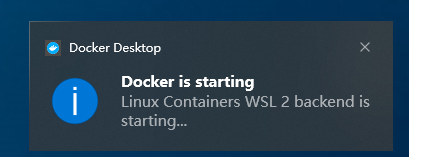
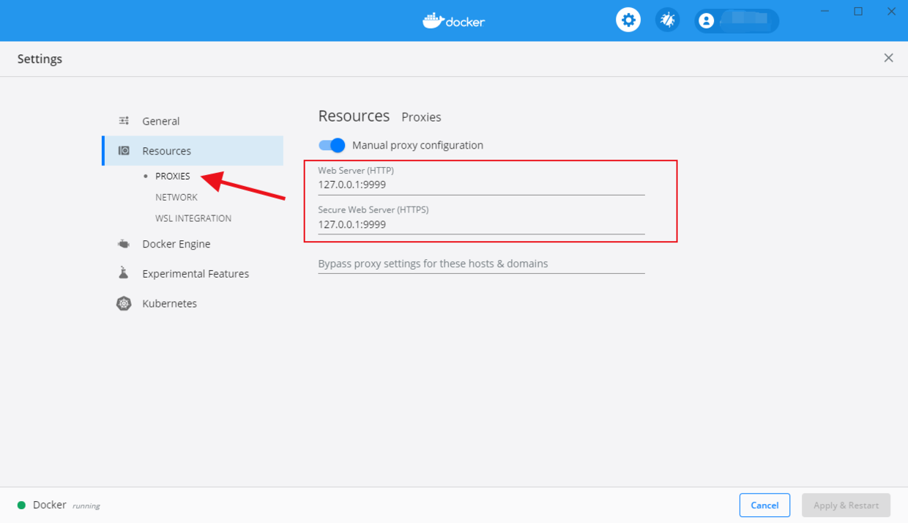
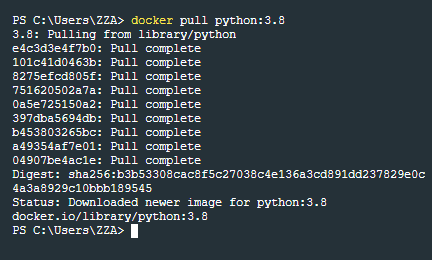
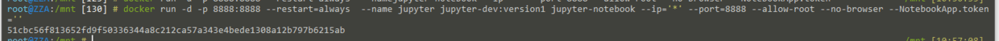
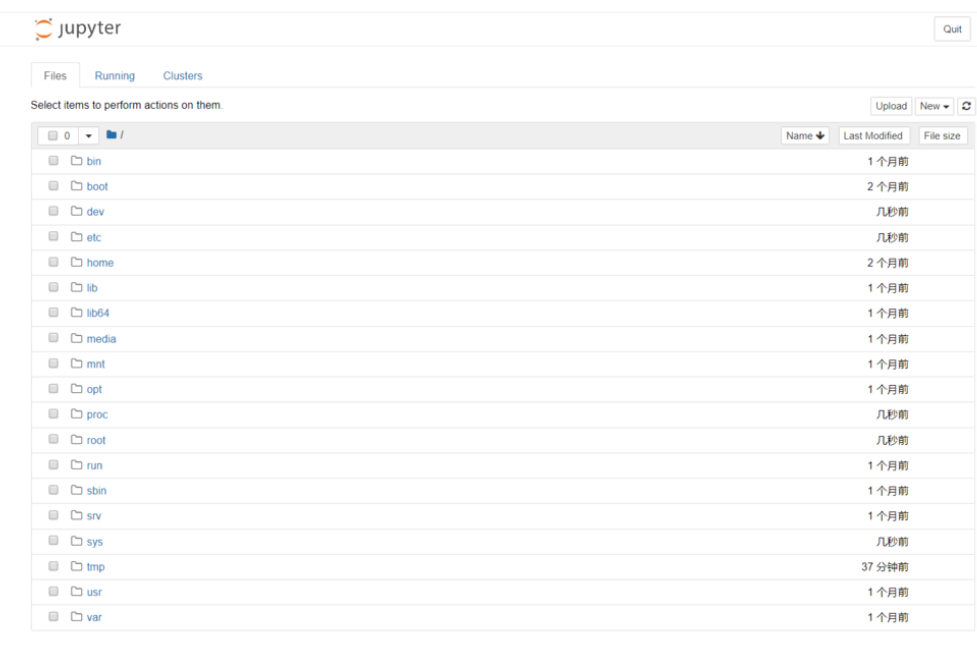
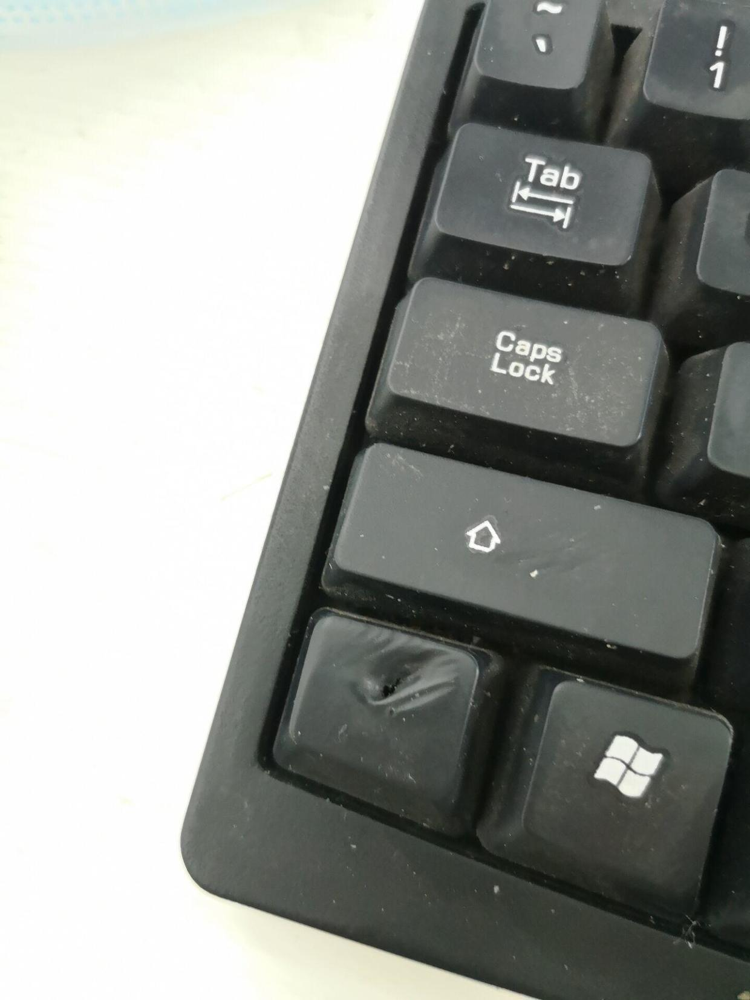
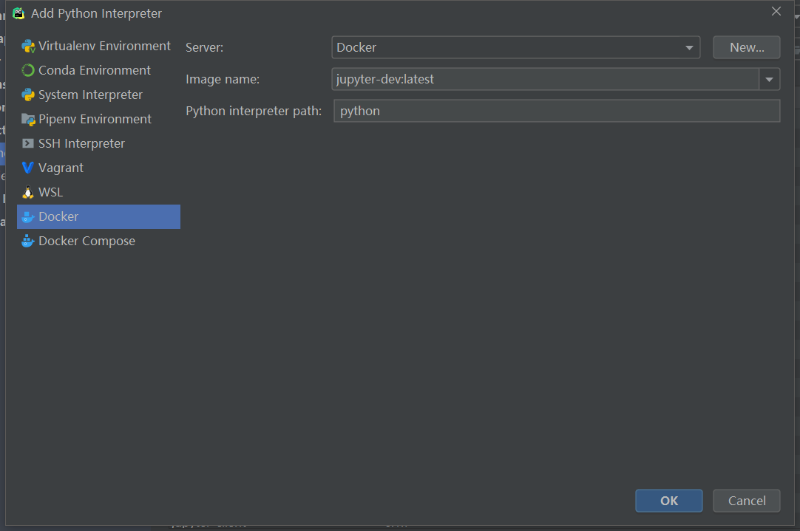
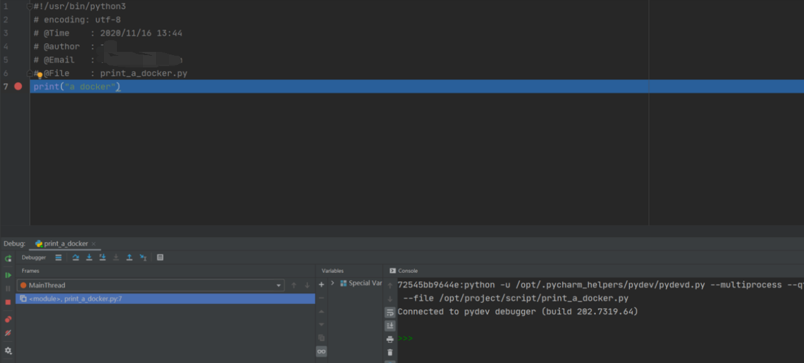

windows上的docker¶
安装¶
下载地址
我的windows上装了wsl2
默认点下一步就好了

安装完成后顺手设置P…

ps. wsl telnet 127.0.0.1 9999 失败 我改成了本机ip
非常的智能。。。
试玩¶
在docker网站上下个python镜像玩玩
docker pull python:3.8

docker run --name docker-tutorial python:3.8 python -c "print('Hello, World!')"
docker rm docker-tutorial
docker run --name docker-tutorial python:3.8 python -c "import os;print(os.listdir('.'))" -v $PWD:/usr/src/myapp -w /usr/src/myapp
docker rm docker-tutorial
-v $PWD/myapp:/usr/src/myapp: 将主机中当前目录下的 myapp 挂载到容器的 /usr/src/myapp。
-w /usr/src/myapp: 指定容器的 /usr/src/myapp 目录为工作目录。
安装python环境并保存¶
docker run --name -it jupyter-dev python:3.8 bash
pip config set global.index-url https://pypi.douban.com/simple
pip install jupyter
exit
docker ps -a
docker commit jupyter-dev jupyter-dev:version1
docker images
docker run -d -p 8888:8888 --restart=always --name jupyter jupyter-dev:version1 jupyter-notebook --ip='*' --port=8888 --allow-root --no-browser --NotebookApp.token=''


关闭
docker stop jupyter docker rm jupyter

pycharm¶
- 找不到docker-machine
- EN-找不到docker-machine
- 建议装在windows上
配置python解释器

发现并不好用
网上教程比较好用
不过已经可以愉快的debug了

kubectl¶
先装个命令补全
echo "source <(kubectl completion zsh)" >> ~/.zshrc source ~/.zshrc
找到你想连接的kubectl集群的配置文件
比如我的在服务器上
rsync -avz root@192.168.20.65:/root/.kube/config /root/.kube/config
rsync -avz root@192.168.20.65:/root/.minikube/ca.crt /root/.minikube/ca.crt
rsync -avz root@192.168.20.65:/root/.minikube/profiles/minikube/client.crt /root/.minikube/profiles/minikube/client.crt
rsync -avz root@192.168.20.65:/root/.minikube/profiles/minikube/client.key /root/.minikube/profiles/minikube/client.key
然后kubectl get pods 你就会发现都在你本机上看得到了
然后就可以获取一个项目的配置文件，然后启动。
kubectl get pods contest-jiantou-64b9cd5597-kvbjp -o yaml